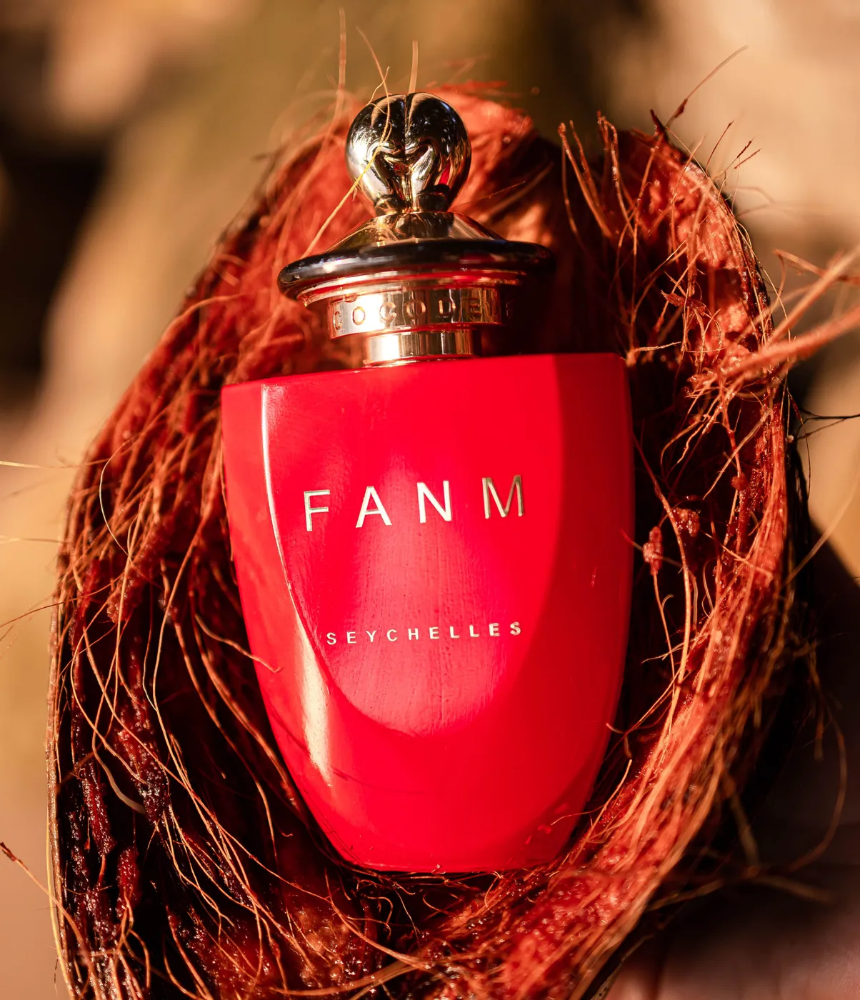

Your Fragrance Guide, Part 1

A Deep Dive into the Wonders of Fanm
This is your Fragrance Guide into Fanm one of the most loved fragrance of the Coco de Mer Collection.
It contains natural Coco de Mer extract: which has powerful sensuality.
The natural coco de mer scent evokes passion and allure, adding a captivating dimension to the fragrance, and these are the other natural ingredients we use to make Fanm the cherished perfume that it is.
Jasmine: a classic floral note, is widely cherished in perfumery for its sweet and exotic fragrance. Its alluring and captivating scent is often associated with femininity, contributing to the perfume's overall appeal.

Gardenia: white floral note, imparts a sense of elegance and femininity. The sweet, creamy, and floral aroma adds sophistication to the perfume, creating a graceful and refined character.
Saffron: Warm and spicy, Saffron introduces a warm and spicy element to the blend, enhancing depth and complexity. Although not a floral note, its rich and luxurious aroma brings a touch of mystery and allure, complementing the overall composition.
Vanilla: Sweet and comforting, Vanilla, a beloved note in perfumery, contributes sweetness and comfort. Its warm and inviting aroma has a soothing effect, associated with feelings of warmth and sensuality. Vanilla enhances the overall femininity of the perfume, creating a comforting and inviting allure.
Patchouli: Earthy and exotic, Patchouli adds an earthy and exotic quality to the perfume blend. Known for its depth and longevity, patchouli can provide a strong base note, grounding the fragrance and imparting a sense of confidence. Its exotic nature adds an intriguing element to the overall composition.
The combination of these ingredients, including the Coco de Mer results in a perfume blend with a diverse range of notes – from sweet and floral to warm, spicy, and earthy. The harmonious balance of these elements aims to evoke femininity, sensuality, and sophistication, offering a fragrance that can resonate with the wearer's personal style and preferences.
As always, individual tastes play a significant role in the perception of scents, so it's essential to choose a fragrance that aligns with one's unique preferences. We invite you to visit our shop and distillery for a chance to see if Fanm will become your new favourite perfume.